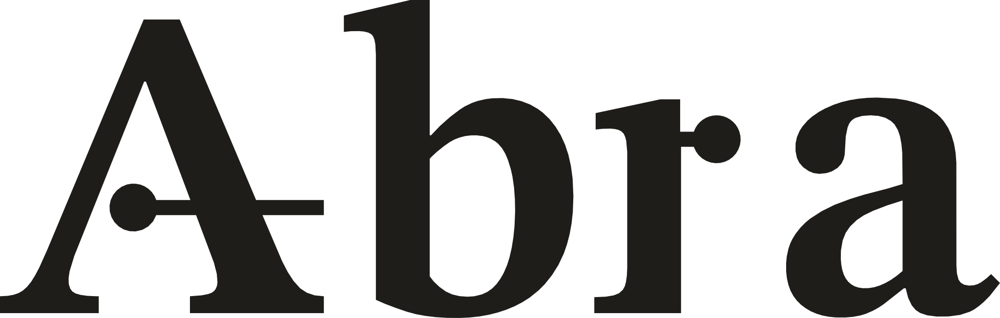

Prova del marchio, v3.1
rev 3.1 · 30.10.2026 · direzione C, Nota a margine
16 px a pixel: punto di 3 px, filo di 2 px per i primi 3 px, poi 1 px (ingrandito 8x)
32 px, simbolo monocromatico a 32 e 16 px
su fondo inchiostro, in negativo
avatar social, tondo e quadrato


grande formato: la traversa della A è un richiamo (punto e filo che esce verso la nota); la r ripete lo stesso punto. Il simbolo è la A annotata